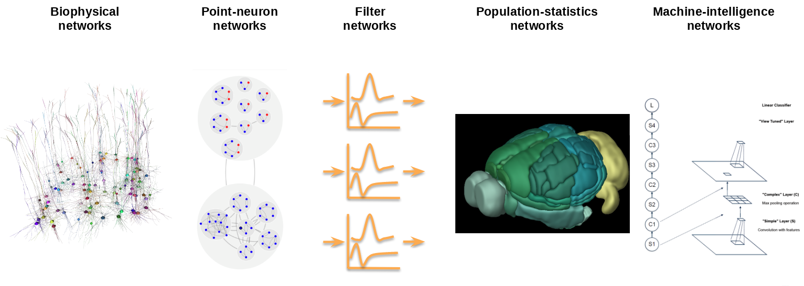

Introduction to the Brain Modeling Toolkit#
The Brain Modeling ToolKit (bmtk) was developed at the Allen Institute for Brain Science to assist with modeling, simulation and analysis of large-scale networks. It was developed in python and is open-source. The bmtk also provides a unified interface across different level of representations of brain models: supporting everything from biophysically detailed models of indvidual neurons and synapses, to high level representation of connection dynamics between different regions of the brain.
Included in the bmtk:
The Network Builder - python API that allows modelers to build large-scale network models with a minimal amount of coding.
A standarized format for representing networks across a range of different levels of resolution, that is both efficient in memory and read-time, but also allows users to quickly adjust parameters before and during simulations.
A collection of simulator interfaces to run network simulations on a variety of different simulators.
Analysis Toolkit - An set of tools for visualizing and analyzing networks and simulation results.

About This Guide#
General Guides#
High level overviews of the bmtk.
Workflow tutorials#
A collection of tutorials for building and simulating different types of networks using the bmtk. These tutorials are only very loosely in order and can for the most part be skipped around.
Other Resources#
BMTK tutorials and lectures previously used at various workshops and conferences. WARNING - these materials are not guaranteed to be up-to-date, use at your own risk!
Prerequisites:#
Running with Docker#
If you have Docker installed on your machine then there is a Docker Image with all the prerequists installed - including a jupyter notebook server with the tutorials installed. Just run:
$ docker pull alleninstitute/bmtk
$ docker run -v /path/to/local/directory:/home/shared/workspace -p 8888:8888 alleninstitute/bmtk jupyter
and then open a browser to 127.0.0.1:8888/. The tutorials folder will contain the jupyter notebook tutorials for you to follow along and modify. However, if you want to save the work permentately make sure to save it in the workspace folder. The tutorials and examples folder will be deleted once the docker container has stopped.
you can also use the Docker image to run bmtk build and run scripts. Just replace the python <script>.py <opts> command with docker run alleninstitute/bmtk -v /path/to/local/directory:/home/shared/workspace python <script>.py <opts>
Running from source#
The bmtk requires at minimum python 2.7 and 3.6+, as well as additional libraries to use features like building networks or running analyses. To install the bmtk it is best recommending to pull the latest from github.
$ git clone https://github.com/AllenInstitute/bmtk.git
$ cd bmtk
$ python setup.py install
However, to run a simulation on the network the bmtk uses existing open-source simulators, which (at the moment) needs to be installed separately. The different simulators, which run simulations on different levels-of-resolution, will require different software. So depending on the type of simulation to be run:
biophysically detailed network (BioNet) - Uses NEURON.
point-neuron network (PointNet) - Uses NEST.
population-level network (PopNet) - Uses DiPDE.
filter models of the visual field (FilterNet) - Uses LGNModels
[ ]: